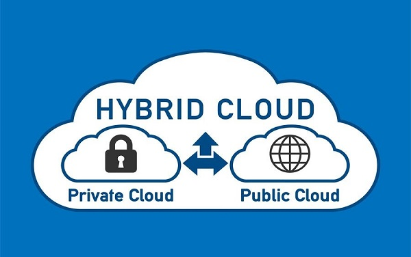

Hybrid Cloud Explained
Hybrid cloud is a combination of public and private clouds.
- Hybrid cloud = public cloud + private cloud
- In the Hybrid cloud, non-critical activities are performed by the public cloud and critical activities are performed by the private cloud.
- Hybrid cloud is mainly used in finance, healthcare, and universities.
- Example hybrid cloud providers: Amazon, Microsoft, Google, Cisco, and NetApp.
Let's consider an example of a global e-commerce company using a hybrid cloud model to enhance its business operations:
1. Public Cloud for Scalability:
- The e-commerce company utilizes a public cloud to host its customer-facing website and mobile applications.
- During high-traffic periods, such as seasonal sales or promotions, the company can dynamically scale its resources.
2. Private Cloud for Critical Workloads:
- The company maintains a private cloud or on-premises data center to host critical workloads, such as the core database with sensitive customer information, proprietary algorithms for recommendation engines, and inventory management systems.
- This ensures that sensitive data and critical business processes are kept within a controlled environment.
Hybrid Cloud Components:
- 1. Public Cloud
- 2. Private Cloud
- 3. Network Connectivity
- 4. Orchestration & Management

Examples:
- Netflix
- Banks
- Healthcare Providers
- E-commerce Platforms
Advantages of Hybrid Cloud:
- 1. Flexible and Secure
- 2. Cost Effective
- 3. Security
- 4. Risk Management
- 5. Improved Business Continuity
Disadvantages of Hybrid Cloud:
- 1. Networking Issues
- 2. Reliability
- 3. Complexity of Management
- 4. Integration Challenges